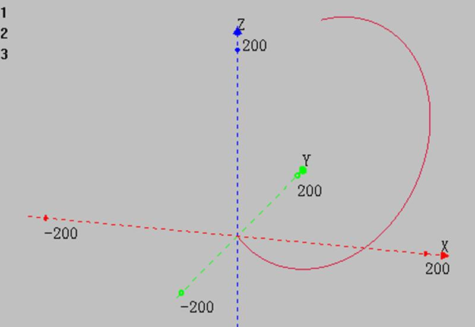
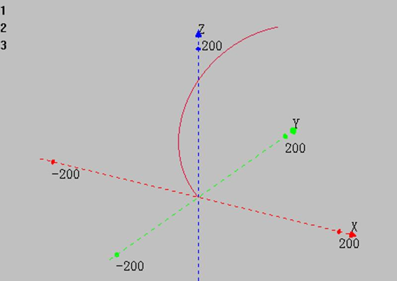
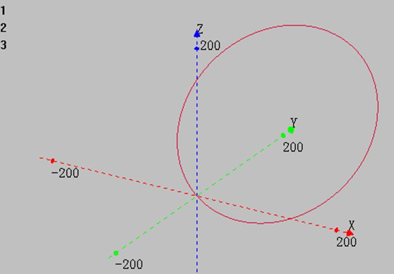
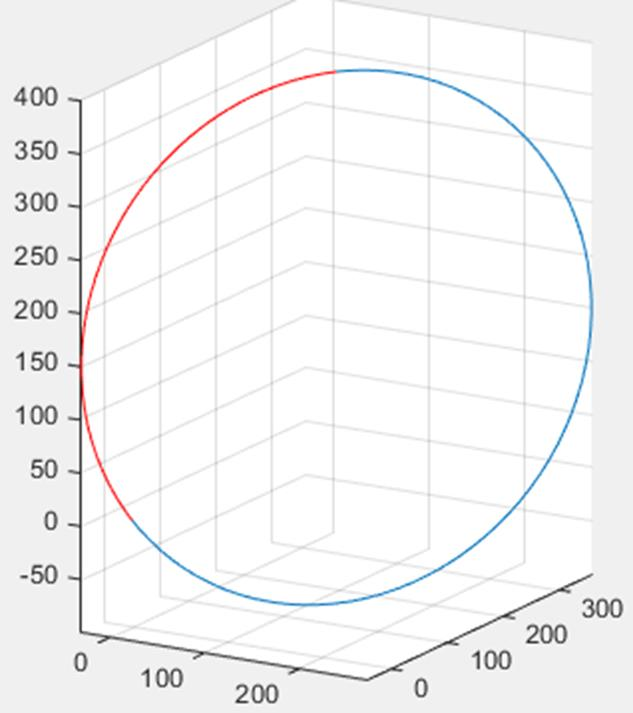

|
类型 |
多轴运动指令 | ||||||||||
|
描述 |
空间圆弧插补运动，绝对移动方式，可选螺旋。 自定义速度的连续插补运动可以使用SP后缀的指令，见*SP描述。 | ||||||||||
|
语法 |
MSPHERICALABS(end1,end2,end3,centre1,centre2,centre3,mode[,distance4][,distance5] [,distance6]) end1：第1个轴运动距离参数1 end2：第2个轴运动距离参数1 end3：第3个轴运动距离参数1 centre1：第1个轴运动距离参数2 centre2：第2个轴运动距离参数2 centre3：第3个轴运动距离参数2 mode：指定前面参数的意义
distane4：第四轴螺旋的功能，指定第4轴的绝对距离，此轴不参与速度计算 distane5：第五轴螺旋的功能，指定第5轴的绝对距离，此轴不参与速度计算 distane6：第六轴螺旋的功能，指定第5轴的绝对距离，此轴不参与速度计算
坐标位置请确保正确，否则实际运动轨迹会错误。 | ||||||||||
|
适用控制器 |
通用 | ||||||||||
|
例子 |
BASE(0,1,2) ATYPE=1,1,1 '设为脉冲轴类型 UNITS=100,100,100 DPOS=0,0,0 SPEED=100,100,100 '主轴速度 ACCEL=1000 ,1000,1000 '主轴加速度 DECEL=1000 ,1000,1000 TRIGGER 使用圆心为(120,160,150)，半径250的圆演示4种mode的运动轨迹 mode 0： MSPHERICALABS(120,160,400,240,320,300,0) '终点(120,160,400)，中间点(240,320,300)，模式0，三点画弧
XYZ模式下轴0轴1轴2插补轨迹 
mode 1： MSPHERICALABS(120,160,400,120,160,150,1) '绝对位置，终点(120,160,400)，圆心(120,160,150)，模式1，走最短的圆弧
XYZ模式下轴0轴1轴2插补轨迹 
mode 2： MSPHERICALABS(120,160,400,240,320,300,2)'终点(120,160,400)，中间点(240,320,300)，模式2，三点画整圆
XYZ模式下轴0轴1轴2插补轨迹 
mode 3： MSPHERICALABS(120,160,400,120,160,150,3) '终点(120,160,400)，圆心(120,160,150)，模式3，先走最短的圆弧(红色部分)，再走完整圆
XYZ模式下轴0轴1轴2插补轨迹  | ||||||||||
|
相关指令 |